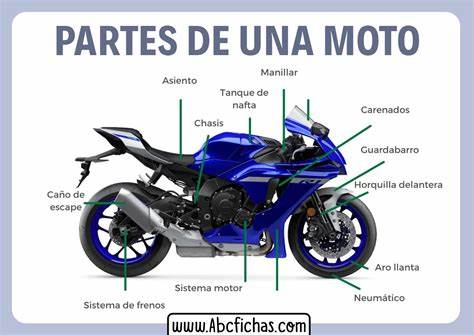

Componentes Basicos
Motor: Las motocicletas están equipadas con motores que pueden ser de diferentes tipos, como motores de combustión interna (generalmente gasolina) o motores eléctricos.
Chasis: Es el marco o estructura que sostiene el motor y las demás partes de la motocicleta.
Ruedas: La mayoría de las motocicletas tienen dos ruedas, aunque existen modelos con tres o incluso cuatro ruedas.
Manillar: El manillar permite al conductor dirigir la motocicleta.
Asiento: Es donde el conductor y, en algunos casos, el pasajero se sientan.
Suspensión: Las motos suelen tener sistemas de suspensión que absorben el impacto de las irregularidades del terreno.
Frenos: Las motocicletas están equipadas con frenos para detener o reducir la velocidad.
